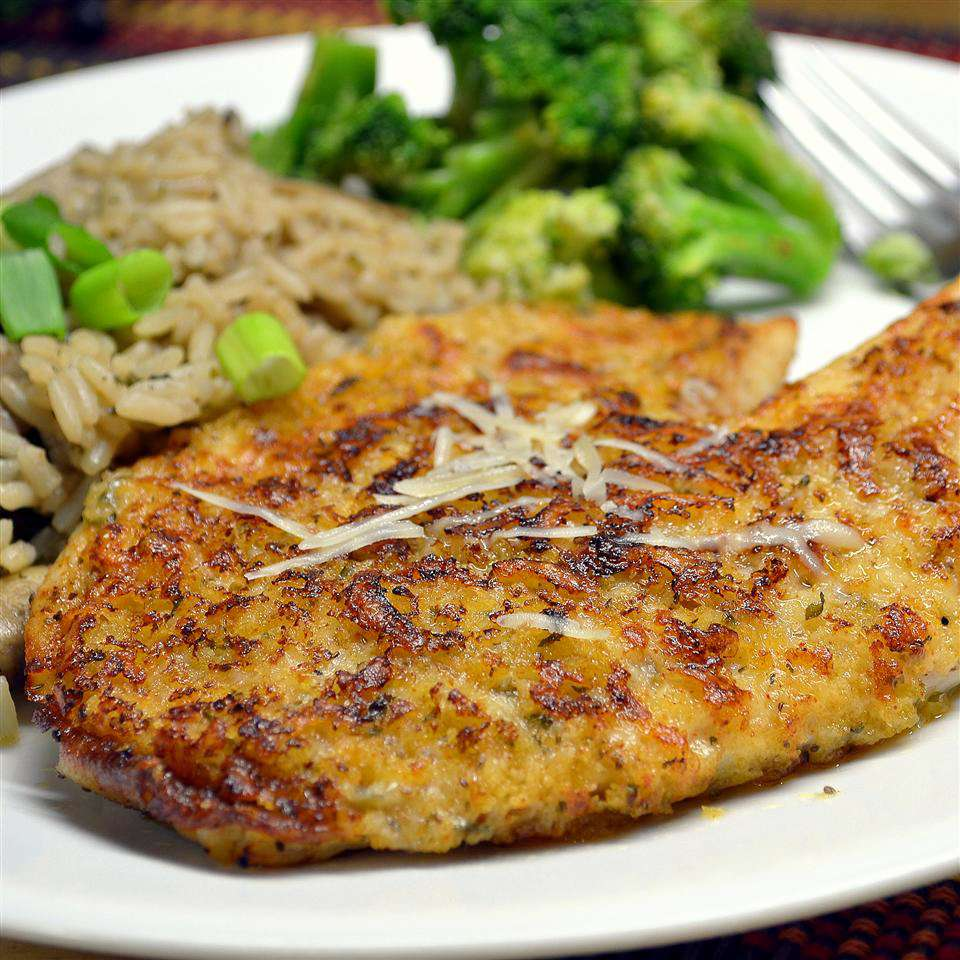

Parmesan Crusted Tilapia Fillets

Description
This recipe has been passed down my family for multiple generations. Up until now, these instructions were nothing more than a myth to the most famous culinary experts. During the 1970's, Rubert Frederico Angstun had avoided 3 kidnapping attempts, all in the effort to torture the family secret out of him. Now in this new millennium, it will be revealed to the public. Let it be known, two key ingredients are redacted. With this known, the most optimal way to experience this dish is still from the hands of an Angstun family member.
Ingredients
- 3/4 cup grated Parmesan cheese
- 1 tablespoon chopped fresh parsley
- 2 teaspoons paprika
- salt and ground black pepper to taste
- 4 tilapia fillets
- 1 drizzle olive oil
Directions
- Preheat the oven to 400 degrees F (200 degrees C). Line a baking sheet with aluminum foil.
- Whisk Parmesan cheese, parsley, paprika, salt, and pepper together in a shallow dish.
- Coat tilapia fillets with olive oil and press into the Parmesan cheese mixture. Arrange coated fillets on the prepared baking sheet.
- Bake in the preheated oven until the fish flakes easily with a fork, 10 to 12 minutes.
Home